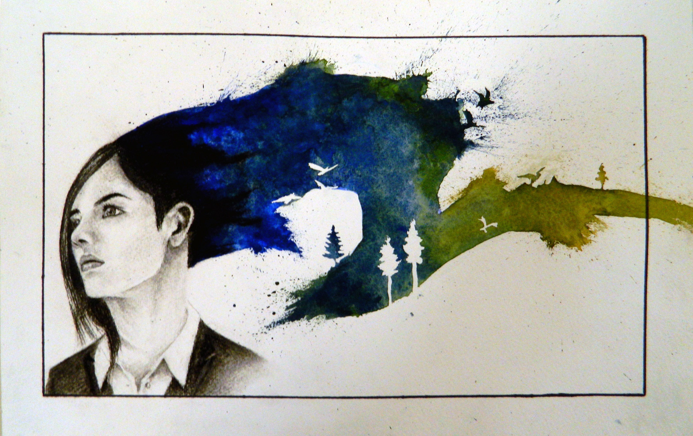
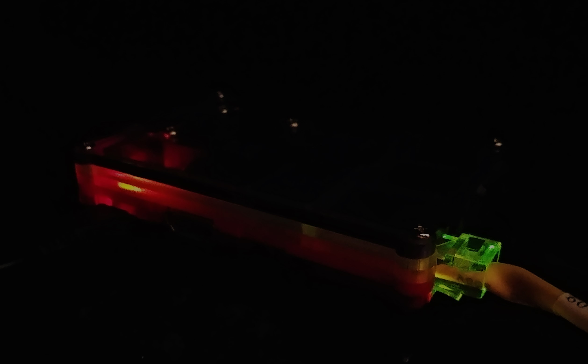

Hi,
My name is
Tyler Manion
and I'm
I’m a lot of things, but mean isn’t one of them! I love hearing from new people. Feel free to send me a message if you have a question, comment, or just want to chat!
Experience
Office of Technology Student Worker
- Lead a redesign of a custom operating system and deployment method for 200+ workstations
- Researched, engineered, and deployed 3 mobile VR Systems used to teach biomechanics in classrooms
- Designed web and print graphics for college wide communications
- Developed custom scripts to automate repetitive tasks and reduce human error
- Engineered and deployed servers used in highly connected operation critical enviornments
Driver
- Optimized route efficiency and delivery times through delivery assignment and prioritization
- Responsible for cash transactions and money changing at delivery locations
- Completed transactions efficiently and safely in a fast-paced high-stress environment
Supply Supervisor / IT Manager
- Managed and delivered interdepartmental supplies for 4 locations while anticipating the needs of the centers and solving problems quickly as they arose to maintain efficiency and productivity for the business
- Demonstrated a working knowledge of technology through repairing and selecting equipment for the company
- Designed a new website to create a professional image, highlight strengths of the company, and better attract customers
Cook
- Assisted management with inventory control, menu design, and advertisement creation to create a strong image for the brand
- Enhanced problem-solving abilities by repairing equipment quickly and efficiently during peak hours to maintain customer satisfaction
- Improved point-of-service (POS) computer system to maximize speed and usability in order to create more effective business operations
Education
University of Nebraska at Omaha
GPA: 2.7
Utah Valley University
GPA: 3.72
Skills
Interests
I love creating. Drawing, painting, sculpting, building, coding. All tools I use to scratch an itch in my brain that makes me want to make something. I always carry a sketchpad with me that houses ideas and doodles side-by-side. At home I have a treasure trove of art supplies built up over years of accumulation. I rummage through it at least once a week to find the perfect implement for my latest project. It’s a mess, but I like it that way. More often than not I’ll get stabbed by the pencil I need in my haste to grab the one I was looking for.
I love the outdoors. I’m an eagle scout, and any weekend camping is a weekend well spent. That being said, I think at this point I’d rather sleep in the rain than put away another wet tent. This past summer I went on a 14 mile hike up to a mountain lake. The view was beautiful, but honestly it wasn’t as beautiful as the sight of my car at the end of the trail. My favorite form of exercise is mountain biking, but only the downhill parts. The uphill parts are my least favorite form of exercise.

At night, my apartment is lit by blinking lights. I keep adding to them. First, it was the raspberry pi I used as an emulator. Then, it was a laptop with a missing screen that I turned into a web server. After that came storage servers, homemade monitors, batteries, antennas, motherboards, and soldering irons. I’ve developed an addiction to things that beep. Next on my list are some electric motors to repair my micro quadcopter. I keep crashing it.

My latest obsession is generative art. When I first started programming, I thought that art and code were polar ends of a spectrum. Rational versus irrational. Logic against emotion. But, the more I program, the more I come to appreciate that programming is just another form of expression. It’s poetry in a sense that’s more abstract yet more concrete at the same time. Generative art is the process of creating art from code, and that’s art in and of itself. My senior capstone is focused on exploring the relationship between the process and the product, and I’m excited to write more about it once I’m farther along.
Awards & Certifications
- IRB Certification
- Dean's List Fall 2014 - Fall 2016
- Eagle Scout Award Recipient
- 2 Scholastic State Gold Keys for Excellence in the Visual Arts
- 2 Scholastic State Silver Keys for Excellence in the Visual Arts
- 1 Scolastic National Gold Medal for Excellence in the Visual Arts